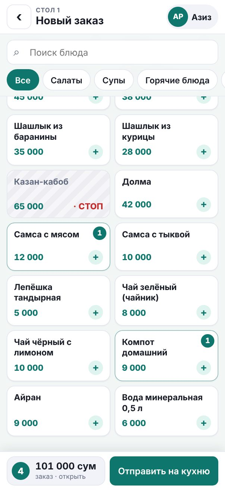
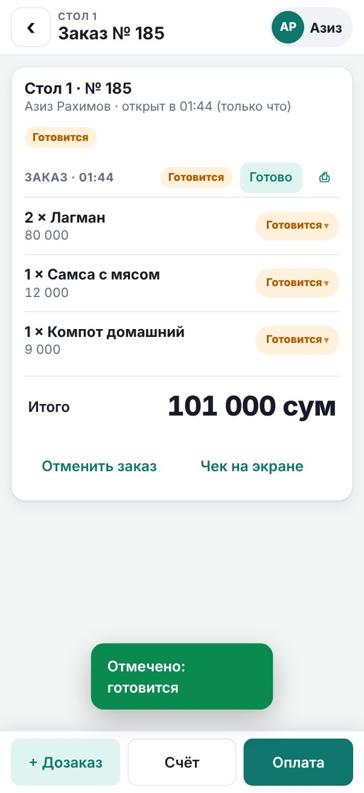
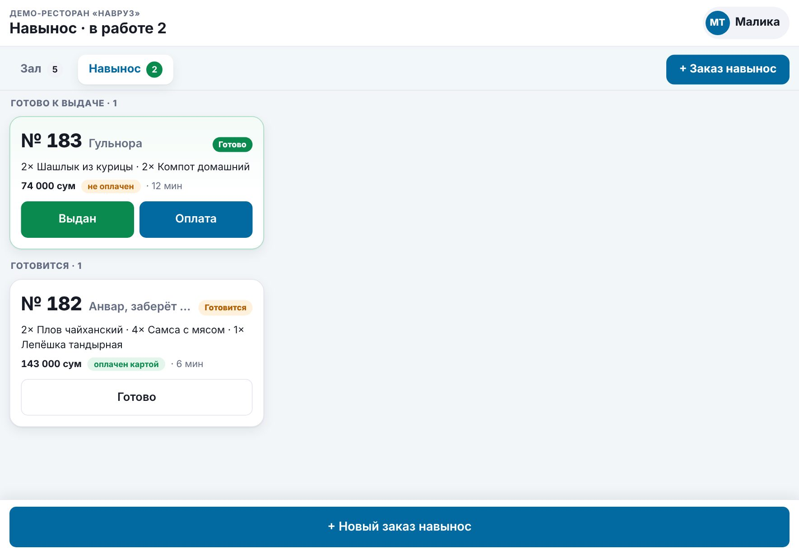
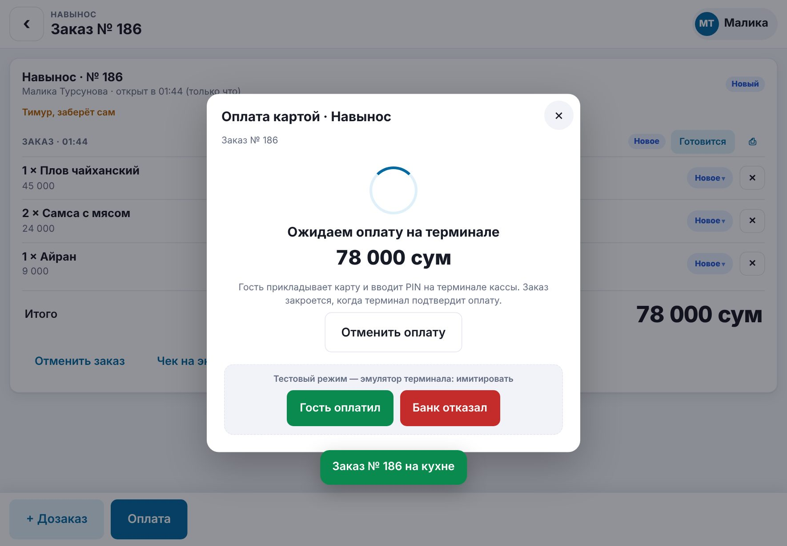

Ресторан: официант, кассир, кухня, админка
Руководство пользователя
Четыре приложения для ресторана: официант принимает заказы на телефоне, кассир — заказы навынос и оплату (наличные и карта через терминал), кухня видит заказы на настенном экране, принтер на кухне печатает чек, администратор ведёт меню, столики, сотрудников и отчёты. Сервер стоит в ресторане и работает без интернета, раз в день отправляя данные на онлайн-сервер.
Содержание
- Знакомство с системой
- Демо-версия
- Вход по PIN
- Официант: схема зала, заказ на телефоне, отправка на кухню, дозаказ, отметки «готовится / готово / подано», счёт, оплата, отмена
- Кассир: заказы навынос, очередь и «Выдан», оплата наличными и картой через терминал
- Кухня: настенный экран заказов, таймер и норматив, отмены и стоп-лист
- Администратор: главная, меню, столики, сотрудники, заказы, отчёты, склад, настройки
- Принтер кухни
- Синхронизация с онлайн-сервером
- Установка на устройства
- Вопросы и решения
1Знакомство с системой
В ресторане работают четыре приложения. Каждое открывается по своему адресу и ставится на устройство как отдельное приложение. Вход у всех один — по личному PIN-коду, а роль сотрудника определяет, какое приложение откроется.
| Приложение | Кто работает | Устройство | Адрес |
|---|---|---|---|
| Официант | официанты, администратор | телефон или планшет | /waiter |
| Кассир | кассиры, администратор | планшет или компьютер на кассе | /cashier |
| Кухня | повара, администратор | настенный монитор — только просмотр | /kitchen |
| Админка | администратор, владелец | компьютер или планшет | /admin |
| Касса и склад | администратор, владелец | телефон, планшет | /kassa/ |
Как проходит заказ
Статусы заказа
| Статус | Что значит |
|---|---|
| Новый | Заказ отправлен на кухню, приготовление ещё не начато |
| Готовится | Кухня начала готовить хотя бы одно блюдо (отмечает официант, кассир или администратор) |
| Готово | Всё, что ещё не подано, готово — можно забирать |
| Подано / Выдан | Все блюда у гостей (навынос — выдан гостю), заказ ждёт счёта и оплаты |
| Оплачен | Заказ закрыт и попал в продажи и отчёты, столик свободен |
| Отменён | Заказ закрыт без оплаты (например, гости ушли) |
2Демо-версия
Демо-версия открывается в браузере без установки и регистрации. В ней работает демо-ресторан «Навруз»: 22 блюда в 5 категориях, 8 столиков, история заказов за две недели, открытые заказы за столиками и навынос. Сервер в демо-версии не нужен — его роль играет сам браузер, а все данные хранятся только на вашем устройстве.

Разделы лаунчера
- Обзор — краткое описание, PIN-коды и сценарий на 5 минут.
- Официант, Кассир, Кухня, Админка — приложения, уже открытые под демо-сотрудниками. Официанта и кассира можно показать на планшете или на телефоне (402 px, как iPhone 17).
- Официант + кухня — официант и экран кухни рядом: отправленный заказ сразу появляется на кухне.
- Кассир + кухня — кассир и экран кухни рядом: заказ навынос, оплата картой через эмулятор терминала.
- Принтер кухни — виртуальный принтер: здесь видны все напечатанные чеки.
- Руководство — этот документ; PDF скачивается кнопкой внизу меню.
Демо-сотрудники
| Сотрудник | Роль | Приложение | PIN |
|---|---|---|---|
| Дилшод Каримов | администратор | админка (и любое другое) | 1111 |
| Азиз Рахимов | официант | официант | 2222 |
| Малика Турсунова | кассир | кассир | 4444 |
| Шахзода Юсупова | повар | кухня (только просмотр) | 3333 |
В рабочей версии такие простые PIN запрещены — здесь они только для удобства.
Сценарий на 5 минут
- Откройте раздел Официант + кухня. Слева — официант на телефоне, справа — экран кухни.
- У официанта нажмите свободный (белый) столик, выберите несколько блюд, нажмите на итог внизу — откроется заказ: к блюду добавьте комментарий «без лука» и нажмите Отправить на кухню.
- Заказ мягко появится на кухне в колонке «Новые». Кухонный чек — в разделе Принтер кухни.
- Экран кухни только показывает заказы. У официанта в заказе нажмите Готовится, затем Готово — карточка на кухне плавно переедет в нужную колонку, на столике появится зелёная метка «Готово».
- Официант: Подано → Счёт → Оплата. Выберите наличные, сумму от гостя — программа посчитает сдачу.
- Откройте Кассир + кухня: + Новый заказ навынос → блюда → Отправить на кухню → Карта → Отправить на терминал → Гость оплатил (или Банк отказал).
- Откройте Админка → Отчёты: заказы уже в выручке.

Режимы демо
- Принтер кухни выключен — чеки встают в очередь, на экране кухни и в админке появляется предупреждение. После включения очередь печатается по порядку.
- Сбой связи с онлайн-сервером — на главной админки появляется пометка «Есть неотправленные данные», а синхронизация возвращает ошибку.
- Начать демо заново — вернуть ресторан к исходному состоянию.
3Вход по PIN

- Нажмите на своё имя.
- Введите PIN — от 4 до 6 цифр — и нажмите Войти. На компьютере PIN можно набрать с клавиатуры.
- Роль определяет приложение. Если повар ввёл PIN на планшете официанта, его перенаправит на экран кухни, кассира — в приложение кассира. Официант, кассир и повар не могут открыть админку.
- Защита от подбора. После 5 неверных PIN подряд вход этого сотрудника закрыт на 15 минут.
- Простые PIN запрещены: одинаковые цифры (1111), цифры подряд (1234, 4321), частые комбинации (2580, 1212).
- Общий планшет. Перед сменой официанта нажмите на своё имя вверху и выберите Выйти — следующий войдёт под своим PIN.
- Отключённый администратором сотрудник сразу теряет доступ на всех устройствах.
4Официант
Приложение официанта рассчитано на современный телефон (ширина экрана около 402 точек, как iPhone 17; подходят телефоны 390–430) и на планшет: крупные кнопки, каждое действие — в 2–3 касания.
Схема зала

| Цвет | Статус | Что на карточке |
|---|---|---|
| белый | свободен | число мест |
| жёлтый | занят | официант, гости, сколько времени прошло, сумма заказа |
| фиолетовый | ждёт счёт | счёт выдан, ждёт оплаты |
Зелёная метка «Готово N» на столике — кухня приготовила блюда, их можно забирать. Переключатель Мои и свободные скрывает столики, которые обслуживают другие официанты. Схема обновляется сама каждые несколько секунд.
Новый заказ

- Нажмите свободный столик.
- Выберите категорию в ленте вверху (она прокручивается пальцем) или найдите блюдо поиском. Каждое касание блюда добавляет одну порцию — число на плитке показывает, сколько уже в заказе.
- Внизу всегда видны итог и кнопка Отправить на кухню. Нажмите на итог — снизу выедет заказ: количество кнопками − и + (до нуля — позиция удаляется), комментарии, гости.
- У позиции нажмите + комментарий: «без лука», «острое», «соус отдельно» — быстрые варианты или свой текст. Повар увидит комментарий под блюдом.
- Укажите число гостей и, если нужно, комментарий ко всему заказу («аллергия на орехи», «подать сразу»).


- Блюда из стоп-листа показаны заштрихованными с пометкой «СТОП» — их нельзя добавить.
- Пока заказ не отправлен, он хранится на устройстве: можно уйти на другой столик и вернуться.
Отправка на кухню
Нажмите Отправить на кухню. В этот момент заказ появляется на экране кухни, а принтер на кухне печатает кухонный чек. Столик становится занятым.
- Если сеть пропала в момент отправки, просто нажмите кнопку ещё раз — второго заказа не появится.
- Если столик успел занять другой официант, программа предложит добавить блюда в уже открытый заказ.
Дозаказ
Гости заказали ещё? Откройте столик и нажмите + Дозаказ, выберите блюда и снова Отправить на кухню. Кухня получит отдельную карточку и отдельный чек только с новыми блюдами — с пометкой «ДОЗАКАЗ». Если счёт уже был выдан, он сбрасывается: итог изменился.
Отметки «Готовится», «Готово», «Подано»

Экран кухни только показывает заказы — отметки ставит официант (так же кассир и администратор):
- У каждой отправки на кухню (заказ, дозаказ) — кнопка следующего шага: Готовится → Готово → Подано. Экран кухни сразу показывает изменение.
- Статус отдельного блюда — нажмите на его плашку («Новое», «Готовится», «Готово») и выберите нужный: например, чай готов раньше плова. Ошибочную отметку можно вернуть, поданное — нет.
- Когда блюда готовы, на столике появляется метка «Готово», телефон вибрирует и подаёт короткий сигнал, готовые позиции подсвечены зелёным.
- Кнопка ⎙ у отправки повторяет кухонный чек (если в ресторане есть принтер).

Счёт

Нажмите Счёт: столик перейдёт в статус «ждёт счёт», а гостевой счёт напечатается на принтере кухни и появится на экране. Если принтер не используется, покажите счёт гостю на экране или нажмите Печать с этого устройства. В любой момент счёт можно открыть кнопкой Чек на экране.
Оплата

- Нажмите Оплата.
- Выберите Наличные или Карта.
- Для наличных введите сумму от гостя или нажмите быструю сумму — программа покажет сдачу.
- Нажмите Закрыть заказ. Столик освобождается, заказ попадает в продажи и отчёты.
Отмена
- Позиция. Блюдо, которое кухня ещё не начала, официант отменяет кнопкой ✕. Начатое или поданное — только администратор.
- Весь заказ. Отменить заказ и причина («гости ушли»). Если кухня уже готовит — отменяет администратор.
- Кухня получает чек «ОТМЕНА» и сообщение на экране.

5Кассир
Приложение кассира — для планшета или компьютера на кассе (работает и на телефоне). У кассира есть всё, что у официанта (зал, открытые заказы, отметки, счёт), плюс заказы навынос и приём оплаты, в том числе картой через банковский терминал.
Заказ навынос

- Нажмите + Новый заказ навынос, выберите блюда, в комментарии укажите имя гостя или время («Анвар, к 13:30»).
- Отправить на кухню: на кухне появится карточка «Навынос», принтер напечатает чек «НАВЫНОС».
- Сразу откроется оплата — примите деньги заранее или закройте окно и оплатите при выдаче.
- Когда кухня отдала заказ, отметьте Готово, выдайте пакет и нажмите Выдан. Оплаченный заказ закрывается; неоплаченный ждёт оплаты в разделе «Выдан — ждёт оплаты».
- Оплаченный заказ больше не меняется: дозаказ и отмена закрыты. Вернуть деньги может администратор в «Кассе и складе».
- Неоплаченный заказ навынос можно дополнить (+ Дозаказ) или отменить, как заказ столика.
Оплата и платёжный терминал

- Оплата → Наличные: сумма от гостя или быстрая сумма — программа считает сдачу.
- Оплата → Карта → Отправить на терминал: сумма уходит на банковский терминал кассы, на экране — ожидание.
- Гость прикладывает карту и вводит PIN. Оплачено — заказ закрывается, на экране номер операции и маска карты. Отклонено или отмена — заказ остаётся открытым: повторите картой или примите наличные.
- Пока гость не оплатил, можно нажать Отменить оплату.
6Кухня
Экран кухни — настенный монитор, который никто не трогает: на нём нет кнопок, только заказы. Светлая минималистичная тема, крупный шрифт — читается с 2–3 метров.
Доска заказов

Каждая карточка — одна отправка на кухню (заказ или дозаказ). На карточке:
- номер заказа (у дозаказа — пометка «ДОЗАКАЗ»), столик или «Навынос» и время с момента отправки;
- состав крупно: «2× Плов»; комментарии к блюдам — под блюдом, отменённые блюда зачёркнуты;
- комментарий ко всему заказу — плашкой под составом.
Доска обновляется сама каждые 5 секунд. Новый заказ мягко появляется в колонке «Новые», а когда официант или кассир отмечает «Готовится» или «Готово», карточка плавно переезжает в нужную колонку. После «Подано» или «Выдан» она уходит с доски. Звук нового заказа включается, если браузер разрешил звук (в Chrome на кухне для этого есть флаг запуска, см. раздел 10).
Таймер и норматив
| Таймер | Когда |
|---|---|
| серый | меньше 70 % норматива |
| янтарный | 70 % норматива и больше |
| красный, вся карточка розовеет | норматив превышен |
Норматив приготовления задаёт администратор (по умолчанию 15 минут). У готовой карточки таймер зелёный и показывает, за сколько заказ приготовлен.
Отмены, стоп-лист, печать
- Отмены показываются вверху экрана: «Отмена · № … · стол …: 2× Плов» — 10 минут. Отменённые позиции на карточке зачёркнуты.
- Стоп-лист виден вверху слева; закончившееся блюдо ставит в стоп администратор (Админка → Меню), официанты сразу перестают его заказывать.
- Печать из браузера идёт сама. Копию кухонного чека печатают из заказа: кнопка ⎙ у официанта и кассира или «Чек на кухню» в админке.
- Сменить сотрудника на экране кухни: откройте адрес
/kitchen?logout— появится вход по PIN.
7Администратор
Админка открывается на компьютере или планшете; на телефоне разделы переезжают в нижнюю панель.
Главная

- Выручка, число оплаченных заказов и средний чек за сегодня, занятые столики, сколько блюд на кухне.
- Открытые заказы — нажмите, чтобы увидеть состав.
- Состояние принтера кухни: сколько чеков ждут печати и последняя ошибка.
- Синхронизация: когда была последняя, что ждёт отправки, кнопка Синхронизировать сейчас.

Меню и стоп-лист

- Создайте категории: + Категория — «Салаты», «Супы», «Напитки». Порядок задаёт последовательность в меню официанта.
- Добавьте блюда: + Блюдо — название, категория, цена, состав, порядок.
- Флажок «Есть в меню» прячет блюдо от официантов (например, сезонное). «Стоп-лист» — блюдо временно закончилось: официант видит его, но заказать не может.
- Кнопка В продаже / В стопе в списке переключает стоп-лист одним касанием. Фильтр «Стоп-лист» показывает всё, чего нет.

Удалённое блюдо пропадает из меню, но остаётся в истории заказов и отчётах. Категорию с блюдами удалить нельзя — сначала перенесите блюда.
Столики

Номер или название («12», «VIP», «Терраса 3»), число мест, порядок на схеме зала. Снимите флажок «Используется», чтобы временно убрать столик со схемы. Столик с открытым заказом удалить нельзя.
Сотрудники и PIN

- + Сотрудник: имя, роль (официант —
/waiter, кассир —/cashier, повар —/kitchen, администратор —/admin), телефон, PIN. - PIN — 4–6 цифр; простые комбинации программа не примет и объяснит почему.
- Чтобы сменить PIN, откройте сотрудника и введите новый; пустое поле — PIN не меняется.
- Отключить — сотрудник сразу выходит на всех устройствах; Вернуть — снова может войти.
- Владелец общий для всех ресторанов и настраивается в «Кассе и складе».
Заказы
Открытые — что сейчас в зале и навынос; За день — все заказы выбранного дня с суммой оплаченных. Нажмите на заказ, чтобы увидеть позиции, комментарии, дозаказы, статус, способ оплаты, номер чека кассы, оплаты через терминал и причину отмены. В карточке открытого заказа администратор тоже ставит отметки «Готовится», «Готово», «Подано» (у навынос — «Выдан гостю») и повторяет кухонный чек.
Отчёты

- Период: Сегодня, 7 дней, 30 дней или свой.
- Выручка — сумма оплаченных заказов; средний чек = выручка / число заказов; гости; отменённые заказы.
- Выручка по дням — наведите на столбик, чтобы увидеть сумму, число заказов и средний чек дня.
- По сотрудникам (официанты и кассиры) и по столикам и навынос — заказы, выручка и средний чек.
- Популярные блюда — порции и выручка; способы оплаты — наличные и карта.
Отчёты считаются по дате оплаты в часовом поясе ресторана.
Склад
Склад продуктов, приход от поставщиков, инвентаризация и прогнозы остатков ведутся в приложении «Касса и склад» — с тем же PIN. Оплаченные заказы ресторана попадают в продажи кассы и видны в её отчётах и журнале.
Настройки ресторана

- Ресторан: название и адрес (печатаются в счёте), норматив приготовления для экрана кухни, шапка и подвал гостевого счёта (телефон, Wi-Fi, благодарность).
- Принтер кухни — см. раздел 8.
- Платёжный терминал кассы: включён или нет, адрес и порт терминала в сети ресторана, тестовый режим (эмулятор), кнопка «Проверить связь». Подключение настоящего терминала зависит от его модели и банка — его выполняет специалист по документации программы.
- Сервер и синхронизация — см. раздел 9.
8Принтер кухни
В ресторане один принтер — на кухне. Он печатает:
- кухонный чек в момент отправки заказа: номер, столик или «НАВЫНОС», официант или кассир, время, блюда крупно, комментарии выделены. Цен и итога нет — это чек для повара;
- дозаказ — только новые блюда, с заголовком «ДОЗАКАЗ К №…»;
- отмену — что больше не готовить;
- счёт гостю — с ценами, итогом, способом оплаты и сдачей.

Сетевой принтер ESC/POS
- Подключите принтер к сети ресторана кабелем или по Wi-Fi и узнайте его IP-адрес (обычно печатается при включении с зажатой кнопкой подачи бумаги). Закрепите адрес на роутере, чтобы он не менялся.
- В админке: Настройки → Принтер кухни → Сетевой принтер ESC/POS, IP-адрес, порт 9100, ширина 48 символов для ленты 80 мм (32 — для 58 мм).
- Нажмите Тестовая печать. На чеке должны быть русские буквы, крупный и инверсный текст. Если вместо букв непонятные символы — смените кодовую страницу (CP866 или Windows-1251) и повторите.
Если принтер выключен или нет бумаги, официант всё равно отправляет заказ — чек ждёт в очереди и печатается, как только принтер снова доступен (повторы через 5, 10, 20, 40 секунд, дальше раз в минуту). Чеки выходят строго по порядку. После 10 неудачных попыток чек помечается «не напечатан»: его можно повторить в админке или перепечатать из заказа (⎙ у официанта и кассира, «Чек на кухню» в админке). Проблема видна на экране кухни и на главной админки.
Печать из браузера
Запасной вариант без сетевого принтера: чеки печатает экран кухни через окно печати браузера на принтер, подключённый к кухонному компьютеру. Чтобы печать шла без диалога, запустите Chrome на кухне в режиме киоска:
google-chrome --kiosk --kiosk-printing --autoplay-policy=no-user-gesture-required https://адрес-сервера/kitchen
Экран кухни печатает чеки сам, без кнопок; последний флаг разрешает звук нового заказа без касания экрана.
Если не печатает
| Что видно | Что сделать |
|---|---|
| Вместо русских букв — непонятные символы | Сменить кодовую страницу в настройках принтера и сделать тестовую печать |
| «Принтер … недоступен» | Проверить питание, бумагу и сетевой кабель; IP-адрес принтера и сервера должны быть в одной сети |
| Чеки «ждут печати» | Включить принтер — очередь напечатается сама по порядку |
| Строки обрезаны или слишком короткие | Выбрать ширину строки под свою ленту: 80 мм — 48 символов, 58 мм — 32 |
| Нужна копия кухонного чека | Кнопка ⎙ у отправки в заказе (официант, кассир) или «Чек на кухню» в карточке заказа админки |
9Синхронизация с онлайн-сервером
Программа работает в двух режимах:
- Локальный сервер стоит в ресторане: официанты, кухня и принтер работают в локальной сети весь день без интернета.
- Онлайн-сервер — облачная копия: сводная админка и отчёты, правка меню и настроек из любого места. Заказы он не принимает.
Раз в день (ночью) и по кнопке Синхронизировать сейчас локальный сервер:
| Направление | Что передаётся | Правило |
|---|---|---|
| Вверх — в облако | завершённые заказы, продажи, движения склада | только добавление, повтор не создаёт дублей |
| Вниз — в ресторан | меню, цены, столики, сотрудники, настройки | при конфликте побеждает онлайн-версия |
Конфликт — когда одну и ту же запись (например, цену блюда) изменили и в ресторане, и в облаке. Тогда остаётся облачная версия. Если запись изменили только в ресторане, правка уходит в облако.

Настройка
- В онлайн-админке ресторана: Настройки → Выпустить токен. Токен показывается один раз — скопируйте его.
- В админке ресторана: Настройки → адрес онлайн-сервера (https://…) и токен → Сохранить.
- Нажмите Проверить связь, затем Синхронизировать сейчас.
Журнал показывает каждую синхронизацию: время, что отправлено и получено, ошибки. Если синхронизация не удалась, данные остаются в ресторане и уходят при следующем запуске (повтор — каждый час), а на главной админки появляется пометка «Есть неотправленные данные».
10Установка на устройства
Каждое приложение ставится на устройство как отдельное приложение со своей иконкой — без магазинов приложений.
- Android, Chrome: откройте адрес приложения (например,
https://адрес-сервера/waiter) → меню ⋮ → Установить приложение. - iPhone, iPad, Safari: кнопка «Поделиться» → На экран «Домой».
- Компьютер, Chrome или Edge: значок установки в адресной строке.
| Где | Что открыть | Совет |
|---|---|---|
| Телефоны и планшеты официантов | /waiter | держите заряженными; на общем устройстве выходите после смены |
| Планшет или компьютер на кассе | /cashier | рядом с платёжным терминалом; терминал — в той же сети |
| Настенный монитор на кухне | /kitchen | Chrome в режиме киоска со звуком без касания, экран не гаснет; кнопок нет |
| Компьютер администратора | /admin | там же удобно работать с «Кассой и складом» |
11Вопросы и решения
- Официант не видит новое блюдо
- Проверьте в админке, что у блюда стоит «Есть в меню» и оно не в стоп-листе. Меню у официанта обновляется само в течение нескольких секунд.
- Гости ушли, а столик занят
- Если всё оплачено — закройте заказ оплатой. Если гости ушли без заказа — «Отменить заказ» с причиной (когда кухня уже готовит, отменяет администратор).
- Сотрудник забыл PIN
- Администратор открывает сотрудника в разделе «Сотрудники» и задаёт новый PIN.
- «Нет связи» на планшете официанта
- Планшет не видит сервер ресторана: проверьте Wi-Fi. Черновик заказа сохранён на планшете, его можно отправить, когда связь вернётся.
- На кухне нет звука
- Браузер разрешает звук только после касания экрана или с флагом запуска Chrome (раздел 10). Один раз коснитесь экрана кухни и проверьте громкость.
- Кто отмечает «Готово», если на кухне нет кнопок?
- Официант, кассир или администратор — в своём приложении. Обычно официант отмечает «Готово», когда кухня отдаёт блюдо на раздачу.
- Почему нельзя закрыть заказ
- Блюда этого заказа ещё готовятся. Отметьте «Готово», когда кухня их отдаст, или отмените блюда, которые гостям уже не нужны.
- Терминал отклонил карту
- Заказ остаётся открытым: повторите оплату картой или примите наличные. Деньги списываются только при «Оплачено».
- Работает ли ресторан без интернета?
- Да. Интернет нужен только для ежедневной синхронизации с онлайн-сервером. Без него данные копятся в ресторане и уходят при первой удачной синхронизации.
- Где хранятся данные?
- На сервере ресторана, раз в день — копия на онлайн-сервере. В демо-версии — только в браузере, на котором её открыли.